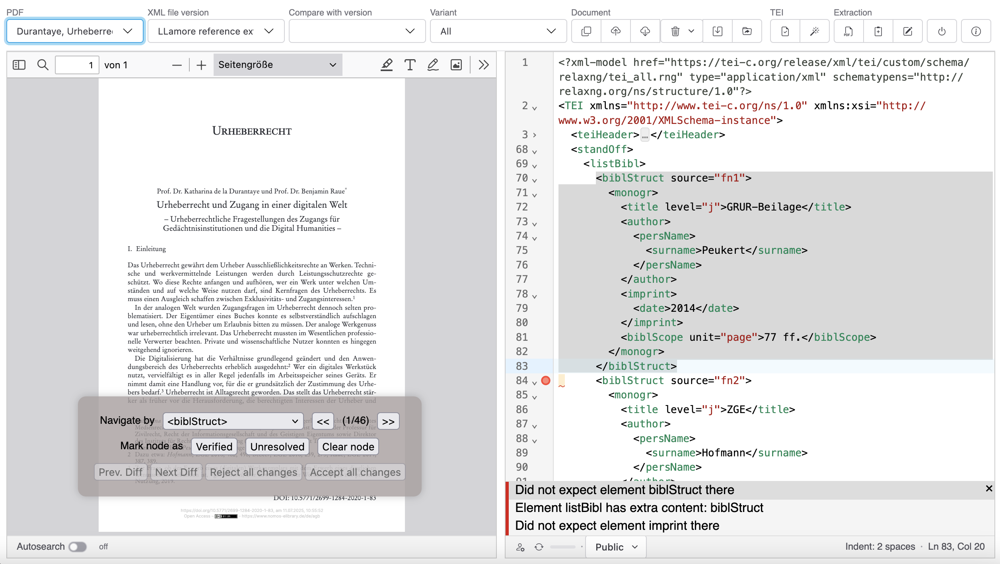

Interface Overview
The PDF-TEI Editor features a three-panel layout designed for efficient comparison and editing of PDF documents and their corresponding TEI markup.

Main Layout
Left Panel: PDF Viewer
The left panel contains the PDF document viewer, which offers the following functionality shipped with the standard PDF.js viewer.
- Document Navigation: Page controls, zoom, and search functionality
- PDF Toolbar: Standard PDF viewing tools including zoom, page navigation, and text selection
- Page Display: Shows the source PDF document with footnotes and bibliographic references
Right Panel: XML Editor
The right panel contains the CodeMirror-based XML editor and provides the following features:
- Syntax Highlighting: Color-coded TEI/XML markup for easy reading
- Schema Validation: Real-time validation against TEI schemas with error highlighting
- Status Bar: Shows cursor position, indentation settings, and document status
Top Toolbar
The toolbar is organized into logical sections:
File Management
- PDF: Dropdown list of available PDF documents
- XML file version: Version selector showing current document version
- Compare with version: Select version for side-by-side comparison
- Variant: Document variant selection. Variants are generated by the available extraction engines.
Document Actions
|—|—
Copy: Create new version of current document Upload: Upload new XML file Download: Download current XML file
Delete: Delete options (current version, all versions, or all files) Save: Save current revision with change documentation Move: Move files to different collection
TEI Processing
Validate: Validate XML against TEI schema TEI Wizard: Guided TEI enhancement and cleanup tools
Synchronization
Sync: Synchronize with external WebDAV repositories
AI Extraction
Extract New: Upload new PDF and extract references Extract Current: Re-extract references from current PDF Edit Instructions: Modify AI extraction prompts
Status Indicators
XML Editor Status Bar
- Line/Column Position: Shows current cursor position (e.g., “Ln 1, Col 1”)
- Indentation: Current indentation setting (e.g., “Indent: 2 spaces”)
- Document Status: Various status indicators including:
- Validation status
- Save status
- Permission level
- Access control information
PDF Viewer Status
- Page Navigation: Current page and total page count
- Zoom Level: Current zoom percentage
- Search Results: Highlighting of search terms